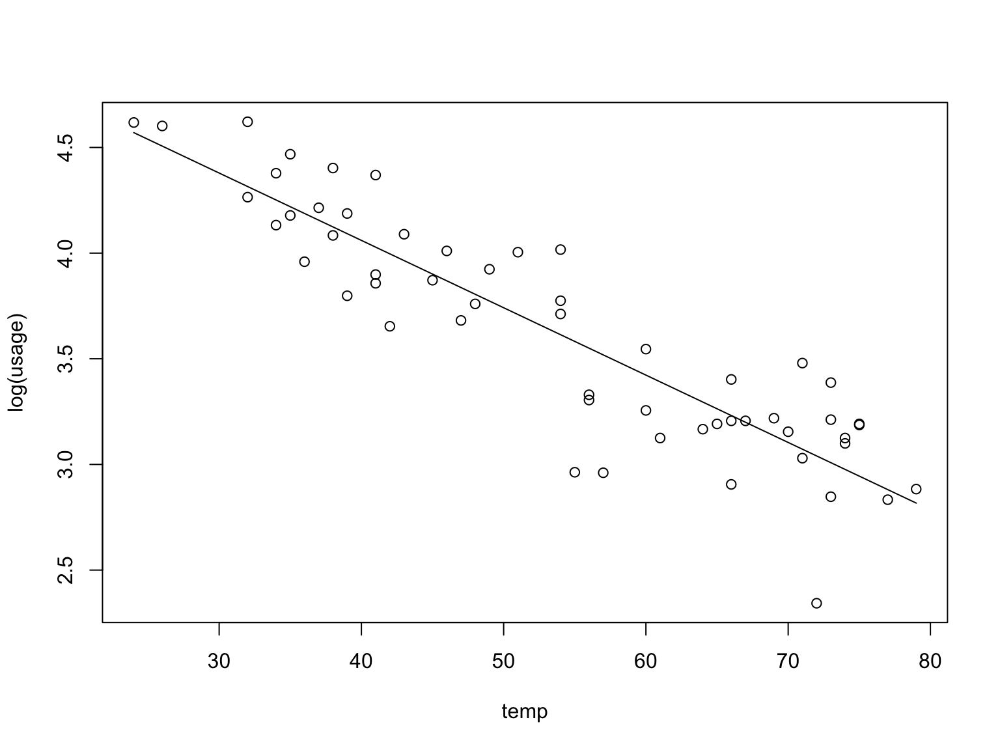
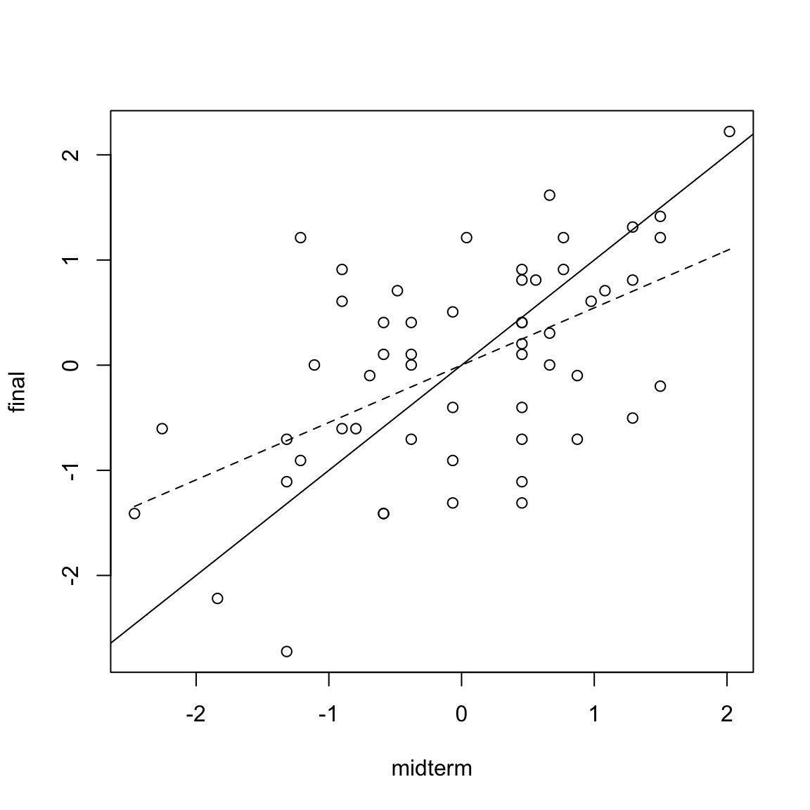

“The method of least squares is the automobile of modern statistical analysis: despite its limitations, occasional accidents, and incidental pollution, it and its numerous variations, extensions, and related conveyances carry the bulk of statistical analyses, and are known and valued by nearly all.”
— Stigler (1981)
“The method of least squares was the dominant theme — the leitmotif — of nineteenth-century statistics. In several respects it was to statistics what the calculus had been to mathematics a century earlier. ‘Proofs’ of the method gave direction to the development of statistical theory, handbooks explaining its use guided the application of the higher methods, and disputes on the priority of its discovery signaled the intellectual community’s recognition of the method’s value. Like the calculus of mathematics, this ‘calculus of observations’ did not spring into existence without antecedents, and the exploration of its subtleties and potential took over a century.”
— Stigler (1986)
Suppose \((X_1,Y_1), (X_2, Y_2), \dots, (X_n, Y_n)\) are given and a simple linear regression model \(Y_i = \beta_0 + \beta_1 X_i + \epsilon\) is posited. One goal of regression analysis is to estimate the \(\beta_0\) and \(\beta_1\) along with characteristics of \(\epsilon_i\) such as its mean and variance.
The method of least squares find estimates \(\hat{\beta}_0\) and \(\hat{\beta}_1\) of \(\beta_0\) and \(\beta_1\), respectively, by solving the optimization problem \[\begin{equation} \tag{1.2} \min_{b_0, b_1} \sum_{i=1}^{n} (Y_i - b_0 - b_1 X_i)^2. \end{equation}\]That is, the method of least squares try to fit a line among the sampled \((X_1,Y_1), (X_2, Y_2), \dots, (X_n, Y_n)\) such that the total squared deviation of the \(Y_i\) from the estimated \(b_0 + b_1 X_i\) is minimum.
The least square estimators \(\hat{\beta}_0\) and \(\hat{\beta}_1\) can be obtained by taking the partial derivatives of \(Q := \sum_{i=1}^{n} (Y_i - b_0 - b_1 X_i)^2\) with respect to \(b_0\) and \(b_1\), set the resulting expression to zero and solve for \(b_0\) and \(b_1\). Specifically, \[\begin{gather} \tag{1.3} \frac{\partial Q}{\partial b_0} = - \sum_{i} 2 (Y_i - b_0 - b_1 X_i) \\ \tag{1.4} \frac{\partial Q}{\partial b_1} = - \sum_{i} 2 X_i (Y_i - b_0 - b_1 X_i) \end{gather}\] Thus, \[\begin{gather*} \frac{\partial Q}{\partial b_0} = 0 \Rightarrow \sum_{i} Y_i = n b_0 + b_1 \sum_{i} X_i \\ \frac{\partial Q}{\partial b_1} = 0 \Rightarrow \sum_{i} X_i Y_i = b_0 \sum_{i} X_i + b_1 \sum_{i} X_i^2 \end{gather*}\] And so, \[\begin{gather} \tag{1.5} \hat{\beta}_1 = \frac{\sum_{i} (X_i - \bar{X}) (Y_i - \bar{Y})}{\sum_{i}(X_i - \bar{X})^2} \\ \tag{1.6} \hat{\beta}_0 = \bar{Y} - \hat{\beta}_1 \bar{X} \end{gather}\]That is, \(\hat{\beta}_0\) and \(\hat{\beta}_1\) can be written as \(\sum c_i Y_i\) where each \(c_i\) does not depend on the \(\{Y_i\}\). \(\hat{\beta}_0\) and \(\hat{\beta}_1\) are best estimators in that for any unbiased linear estimator \(\tilde{\beta}_0\) and \(\tilde{\beta}_1\) of \(\beta_0\) and \(\beta_1\), one has \(\mathrm{Var}[\hat{\beta}_0] \leq \mathrm{Var}[\tilde{\beta}_0]\), \(\mathrm{Var}[\hat{\beta}_1] \leq \mathrm{Var}[\tilde{\beta}_1]\).
Suppose that \(\hat{\beta}_0\) and \(\hat{\beta}_1\) are estimated. Then, for any value of \(X\), the regression estimate \(\hat{Y}\) for \(\mathbb{E}[Y]\) is \(\hat{Y} = \hat{\beta}_0 + \hat{\beta}_1 X\). By the Gauss-Markov theorem, \(\hat{Y}\) is the best linear unbiased estimator for \(\mathbb{E}[Y]\).
For the given \(\{(X_i, Y_i)\}\), \(\hat{Y}_i = \hat{\beta}_0 + \hat{\beta}_1 X_i\) is termed the fitted value and \(e_i = Y_i - \hat{Y}_i\) is termed the residual. Under the simple linear regression model, the \(\epsilon_i = Y_i - \beta_0 - \beta_1 X_i\) are uncorrelated random variables with mean \(0\) and variance \(\sigma^2\). Thus, one can estimate \(\sigma^2\) from the residuals \(\{e_i\}\). Namely, \[\begin{equation*} s^2 = \frac{1}{n-2} \sum_{i=1}^{n} e_i^2 \end{equation*}\]is an unbiased estimator for \(\sigma^2\). The quantity \(s^2\) is also referred to as the mean squared error or MSE.
Table 1.2: Snippet of the eletricity usage data
| usage | temp |
|---|---|
| 24.83 | 73 |
| 24.69 | 67 |
| 19.31 | 57 |
| 59.71 | 43 |
| 99.67 | 26 |
| 49.33 | 41 |
The data frame has 55 observations on monthly electricity usage in kilowatt-hours and average temperature for a house in Westchester County, New York, USA. We now regress the \(\mathrm{log}\) of usage as the response variable against temp as the predictor variable.
library("SemiPar")
data(elec.temp)
temp <- elec.temp$temp;
usage <- elec.temp$usage
txx <- sum((temp - mean(temp))^2)
beta1.hat <- sum((temp - mean(temp))*log(usage))/txx
beta0.hat <- mean(log(usage)) - beta1.hat*mean(temp)
plot(temp, log(usage))
curve(beta0.hat + beta1.hat*x, seq(min(temp),max(temp),by=1), add = TRUE) The above computation yield \(\hat{\beta}_0 = 5.3351942\) and \(\hat{\beta}_1 = -0.0318738\). Equivalently,
lm(log(usage) ~ temp)| Estimate | Std. Error | t value | Pr(>|t|) | |
|---|---|---|---|---|
| (Intercept) | 5.335 | 0.1203 | 44.34 | 1.406e-43 |
| temp | -0.03187 | 0.002149 | -14.83 | 1.661e-20 |
Table 1.3: Snippet of the Stat500 data
| midterm | final | hw | total |
|---|---|---|---|
| 24.5 | 26.0 | 28.5 | 79.0 |
| 22.5 | 24.5 | 28.2 | 75.2 |
| 23.5 | 26.5 | 28.3 | 78.3 |
| 23.5 | 34.5 | 29.2 | 87.2 |
| 22.5 | 30.5 | 27.3 | 80.3 |
| 16.0 | 31.0 | 27.5 | 74.5 |
Exam score for Statistics 500 in one year at the University of Michigan. We observe a ``regression to the mean’’ phenomenon.
stat500 <- data.frame(scale(stat500))
midterm <- stat500$midterm
final <- stat500$final
txx <- sum((midterm - mean(midterm))^2)
beta1.hat <- sum((midterm - mean(midterm))*final)/txx
beta0.hat <- mean(final) - beta1.hat*mean(midterm)
c(beta0.hat, beta1.hat)## [1] -4.104752e-16 5.452277e-01 plot(midterm,final); abline(0,1)
curve(beta0.hat + beta1.hat*x, seq(min(midterm),max(midterm), by = 0.1), lty = 2, add = TRUE)Figure 1.2: Regression to the mean; the dashed-line is the regression line, indicating that students with extremely low scores on the midterm exam improved while those with extremely high scores regressed.
That is, the \(\epsilon_i\) are independent, identically distributed Gaussian random variables with mean \(0\) and variance \(\sigma^2\). The normal error regression model is a special case of the simple linear regression model discussed earlier. The assumption of normally distributed \(\epsilon_i\) allows one to perform more detailed inference, e.g., confidence interval estimation for the parameters \(\beta_0\) and \(\beta_1\).
Given \((X_1,Y_1), (X_2, Y_2), \dots, (X_n, Y_n)\), the likelihood of observing the \(\{Y_1,Y_2, \dots, Y_n\}\) under the normal error regression model with parameter \(\beta_0, \beta_1\) and \(\sigma^2\) is \[\begin{equation*} L(\beta_0, \beta_1, \sigma^2) := \prod_{i=1}^{n} \frac{1}{\sqrt{ 2 \pi \sigma^2}} \exp \Bigl( - \frac{(Y_i - \beta_0 - \beta_1X_i)^2}{2\sigma^2} \Bigr) \end{equation*}\] The maximum likelihood estimator for \(\beta_0\), \(\beta_1\) and \(\sigma^2\) are then estimates that maximizes the likelihood \(L(\beta_0, \beta_1, \sigma^2)\). That is \[\begin{equation*} \hat{\beta}_0, \hat{\beta}_1, \hat{\sigma}^2 := \underset{\beta_0, \beta_1, \sigma^2}{\operatorname{argmax}} \prod_{i=1}^{n} \frac{1}{\sqrt{ 2 \pi \sigma^2}} \exp \Bigl( - \frac{(Y_i - \beta_0 - \beta_1X_i)^2}{2\sigma^2} \Bigr). \end{equation*}\] This can be done as follows. Taking the logarithm of the likelihood gives \[\begin{equation*} \begin{split} \log{L} &= \log \prod_{i=1}^{n} \frac{1}{\sqrt{ 2 \pi \sigma^2}} \exp \bigl( - \frac{(Y_i - \beta_0 - \beta_1X_i)^2}{2\sigma^2} \bigr) \\ &= - \frac{n}{2} \log{ 2 \pi \sigma^2} - \sum_{i=1}^{n} \frac{(Y_i - \beta_0 - \beta_1X_i)^2}{2\sigma^2}. \end{split} \end{equation*}\] Then as \(\log\) is a non-decreasing function \[\begin{equation*} \begin{split} \underset{\beta_0, \beta_1, \sigma^2}{\operatorname{argmax}} L(\beta_0, \beta_1, \sigma^2) &= \underset{\beta_0, \beta_1, \sigma^2}{\operatorname{argmax}} \log{L(\beta_0, \beta_1, \sigma^2)} \\ &= \underset{\beta_0, \beta_1, \sigma^2}{\operatorname{argmin}} \frac{n}{2} \log{ 2 \pi \sigma^2} + \sum_{i=1}^{n} \frac{(Y_i - \beta_0 - \beta_1X_i)^2}{2\sigma^2}. \end{split} \end{equation*}\] The partial derivatives of \(\log{L}\) with respect to \(\beta_0\), \(\beta_1\) and \(\sigma^2\) are \[\begin{gather*} \frac{\partial \log{L}}{\partial \beta_0} = \frac{1}{2\sigma^2} \sum_{i=1}^{n} 2(Y_i - \beta_0 - \beta_1 X_i), \\ \frac{\partial \log{L}}{\partial \beta_1} = \frac{1}{2 \sigma^2} \sum_{i=1}^{n} 2X_i(Y_i - \beta_0 - \beta_1 X_i), \\ \frac{\partial \log{L}}{\partial \sigma^2} = -\frac{n}{2 \sigma^2} + \frac{1}{2 \sigma^4} \sum_{i=1}^{n} (Y_i - \beta_0 - \beta_1 X_i)^2. \end{gather*}\] Setting the partial derivatives to \(0\) yield the system of equations \[\begin{gather*} \frac{1}{2\sigma^2} \sum_{i=1}^{n} 2(Y_i - \beta_0 - \beta_1 X_i) = 0, \\ \frac{1}{2 \sigma^2} \sum_{i=1}^{n} 2X_i(Y_i - \beta_0 - \beta_1 X_i) = 0, \\ \frac{1}{2 \sigma^4} \sum_{i=1}^{n} (Y_i - \beta_0 - \beta_1 X_i)^2 = \frac{n}{2 \sigma^2}. \end{gather*}\] The first two equations (for \(\beta_0\) and \(\beta_1\) ) are the same as in the least square estimation (up to scaling by \(1/(2\sigma^2)\)). Thus, \[\begin{gather*} \hat{\beta}_1 = \frac{\sum_{i} (X_i - \bar{X}) (Y_i - \bar{Y})}{\sum_{i}(X_i - \bar{X})^2}; \quad \hat{\beta}_0 = \bar{Y} - \hat{\beta}_1 \bar{X}; \end{gather*}\] We note that the least square estimator for \(\beta_0\) and \(\beta_1\) thus coincides with the maximum likelihood estimator in the setting of normal error. Substituting the value of \(\hat{\beta}_0\) and \(\hat{\beta}_1\) into the equation for \(\sigma^2\) also yield \[\begin{equation*} \hat{\sigma}^2 = \frac{1}{n} \sum_{i=1}^{n} (Y_i - \hat{\beta}_0 - \hat{\beta}_1 X_i)^2 = \frac{1}{n} \sum_{i=1}^{n} (Y_i - \hat{Y}_i)^2 = \frac{n}{n-2} s^2 \end{equation*}\]so the estimator \(\hat{\sigma}^{2}\) differs (slightly) from the estimator \(s^2\).
On the other hand, if the error follows a Laplace distribution with mean \(\mu\) and variance \(2a^2\), i.e., the probability density function of the error is \(\tfrac{1}{2a}\exp(-|x - \mu|/a)\) then the maximum likelihood estimator for \(\beta_0\) and \(\beta_1\) correspond to the following estimator \[\begin{equation*} \underset{\beta_0, \beta_1, \sigma^2}{\operatorname{argmin}} \sum_{i=1}^{n} | Y_i - \beta_0 - \beta_1 X_i | \end{equation*}\]which has no closed-form formula.